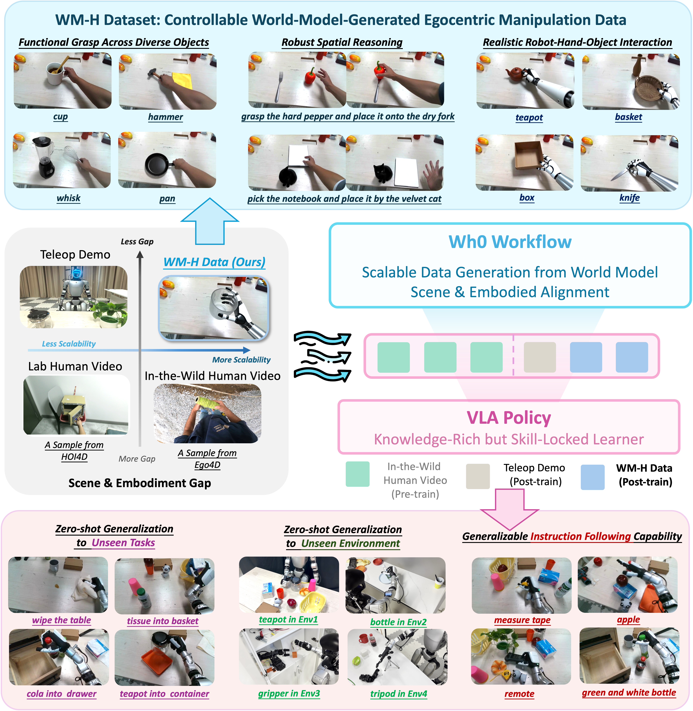
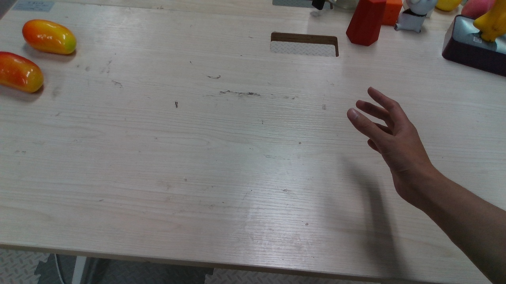
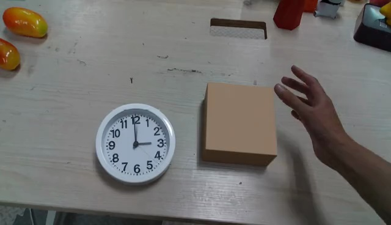
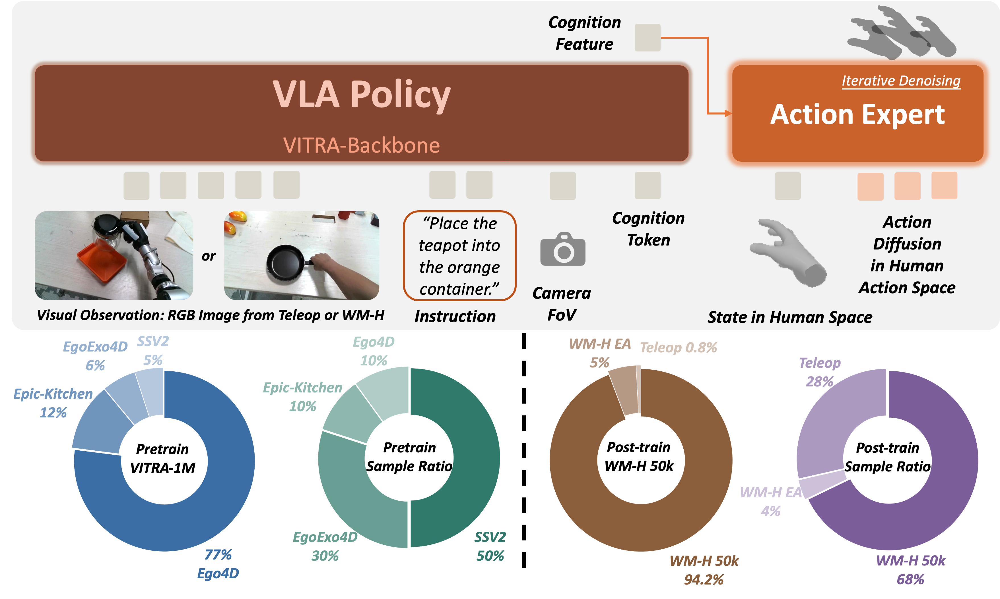
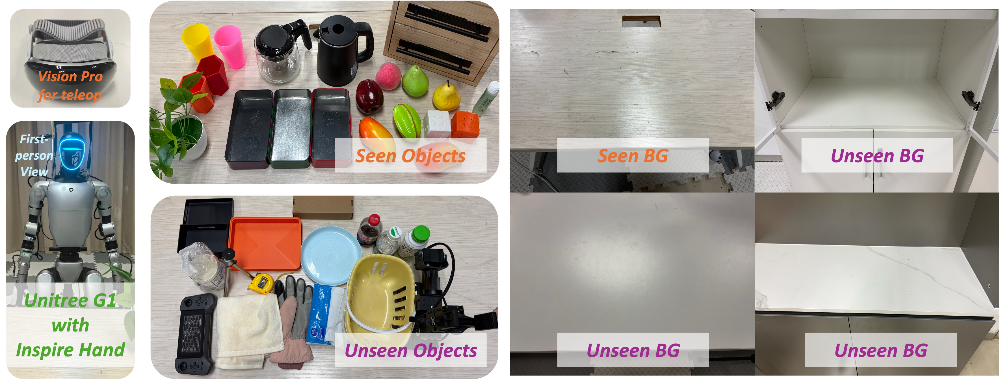

Scaling dexterous manipulation requires generalization across objects, scenes, and tasks, yet existing data sources face a trade-off between scale and scene/embodiment alignment: teleoperation data is well aligned with robot deployment but expensive to collect; simulation is scalable but limited by the sim-to-real gap; and real egocentric videos scale effectively but remain misaligned with robot deployment. We propose Wh0, a framework that uses generative video world models as scalable and controllable sources of egocentric human-hand manipulation data to unlock the manipulation capabilities of pretrained dexterous VLA models. Conditioned on language, objects, and scenes, Wh0 uses a generative world model to produce WM-H, a 50k-episode dataset of egocentric human-object interaction videos. Wh0 then converts the generated videos into robot-trainable supervision through hand motion reconstruction and visual editing. Co-trained with a limited amount of real robot data, WM-H adapts pretrained VLA models to dexterous manipulation deployment. Across 18 real-world dexterous manipulation tasks, compared with a model post-trained only on robot data, Wh0 improves zero-shot success on unseen tasks from 8.3% to 38.9%. Ablation studies further show that scalable generation and scene/embodiment alignment are key drivers of performance gains.

Overview of Wh0. Top: WM-H provides world-model-generated egocentric manipulation videos with diverse objects, layouts, and hand-object interactions. Middle: WM-H uniquely combines scale with low scene & embodiment gap to deployment; Wh0 converts them to robot-trainable supervision and co-trains with limited robot data atop a human-video-pretrained VLA. Bottom: The resulting policy zero-shot generalizes to unseen tasks, environments, and instructions in real-world manipulation.

Capture
Insert Objectsaugmented_text
A dual-agent LLM system discovers object nouns & adjectives, then preferentially samples under-represented words to compose balanced manipulation instructions.
WM-H data synthesis pipeline. Click any step or use the controls to walk through how raw prompts become 50k robot-trainable egocentric manipulation episodes.
Construction. Full pipeline: balanced instruction generation, scene-aligned object insertion into robot workspace captures, Wan-I2V video synthesis, and HaWoR 3D hand motion extraction. Training. Co-trained as the primary data source (68% of each batch) with teleop and embodiment-aligned frames to scale dexterous policy learning beyond limited robot demos.
Construction. Same generation pipeline, but initial frames are sampled from Ego4D instead of robot-workspace captures with scene editing, yielding videos in everyday unconstrained environments. Training. An ablation variant co-trained in place of full WM-H to measure how scene misalignment limits grounding and real-world task success.
Construction. Qwen-Image-Edit replaces the human hand with a realistic dexterous robot hand on sparsely sampled frames, preserving pose and hand-object contact. Training. Mixed into co-training at 4% to keep action features stable under robot-hand appearance and improve embodiment transfer at deployment.

Policy architecture and data composition. A VITRA-style policy denoises actions in the unified MANO space, conditioned on PaliGemma cognition features, FoV, and current hand state. Wh0 co-trains 50k WM-H samples with 400 teleoperated robot demonstrations (28% teleop, 68% WM-H, 4% WM-H w/ Embodiment Alignment).

| Method | Training Setup | Success Rate (%) ↑ | ||
|---|---|---|---|---|
| Pretraining | Adaptation Data | Strategy | ||
| π0.5 | Robot | Teleop | FT | 7.78±15.6 |
| VITRA | Human | Teleop | FT | 8.3±8.6 |
| VITRA Real Version | Human | Teleop + Real Ego | Co-FT | 21.4±23.4 |
| Wh0 | Human | Teleop + WM-H | Co-FT | 38.9±19.8 |
Real-world evaluation and dexterous manipulation performance. Unitree G1 with Inspire hands and a head-mounted egocentric camera (teleop via Vision Pro); evaluation spans unseen objects and one seen plus three unseen backgrounds. We compare different pretraining sources and adaptation data under the same real-robot evaluation protocol. FT denotes fine-tuning on a single adaptation source, while Co-FT denotes joint fine-tuning on multiple data sources.
@misc{wh0_2026,
title={Wh0: Generative World Models as Scalable Sources of Egocentric Human Hand Manipulation Data},
author={Anonymous},
note={Under review},
year={2026}
}